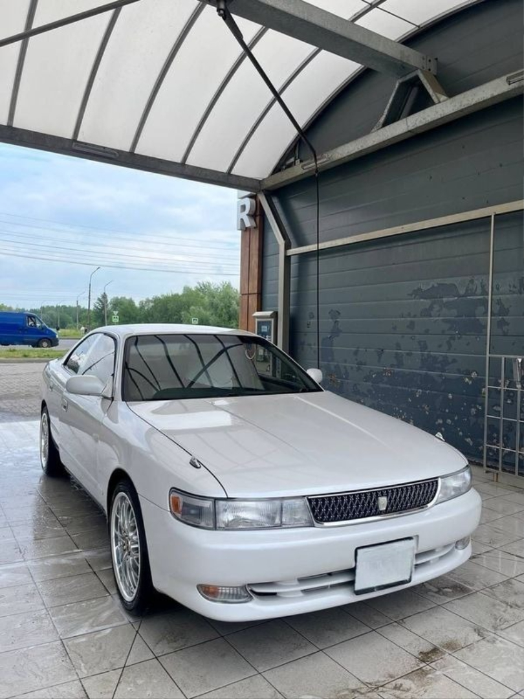
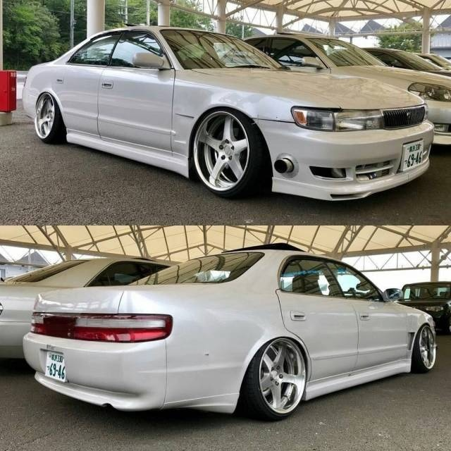
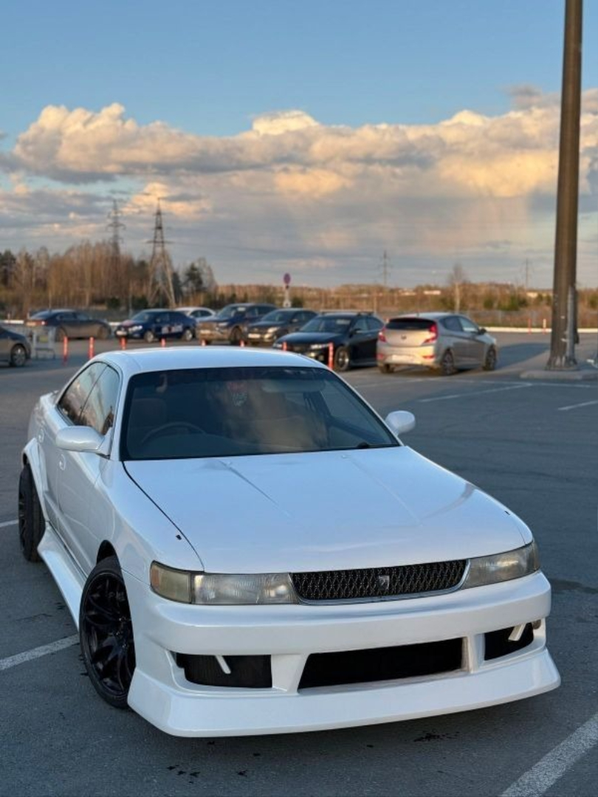

Философия: Истинный «Водительский» седан
В триумвирате Toyota 90-х (Mark II, Chaser, Cresta) модель Chaser с самого начала занимала особую, строго отведенную ей нишу — спортивного седана для водителя. Если Mark II был сбалансированным «для всех», а Cresta — роскошным «для пассажиров», то Chaser создавался с одной целью: доставлять удовольствие от управления. Платформа X90 стала для него идеальным полем для реализации этой идеи. Его ДНК — это задний привод, мощный рядный шестицилиндровый двигатель и нацеленность на динамику.
Дизайн и позиционирование: Агрессия с первого взгляда
Внешность Chaser X90 недвусмысленно говорила о его характере. В отличие от сдержанного Mark II, Chaser получил:
- Узкие, прищуренные передние фары с интегрированными поворотниками.
- Более агрессивный передний бампер с выраженными воздухозаборниками.
- Спойлер на кромке багажника как стандартный элемент для многих комплектаций.
- Часто — спортивные легкосплавные диски и низкопрофильную резину.
В салоне акцент также делался на водителя: спортивные кресла с лучшей боковой поддержкой, трехспицевый руль и в целом более «поджарая», ориентированная на управление атмосфера, даже в сравнении с братьями.
Техническая база: Сердце чемпиона
Под капотом Chaser X90 находились те же легендарные двигатели, что и у Mark II, но часто в более высоком проценте комплектаций:
- 1JZ-GE (2.5 л, 200 л.с.): Надежный атмосферник, но в шасси Chaser он раскрывался иначе — острее и отзывчивее.
- 1JZ-GTE (2.5 л, турбо Twin Turbo, 280 л.с.): Главное оружие и причина культа. Турбированный двигатель был душой Chaser. Модель в кузове X90 стала одной из самых желанных платформ для дрифта в мире именно благодаря комбинации этого мотора, жесткой настройки подвески и идеального распределения веса.
Ключевое отличие от Mark II часто заключалось в настройках шасси. Chaser, особенно в топовых версиях, имел более жесткую и отзывчивую подвеску, что делало его поведение на дороге более четким и собранным.


Рестайлинг: Становление Иконы
В 1996 году Chaser, как и его братья, перешел на платформу X100. Его дизайн эволюционировал, став еще более уверенным и выразительным. Передняя часть изменилась кардинально: появились знаковые сдвоенные круглые фары (в стиле, отличном от Cresta) или продолговатые блок-фары, решетка радиатора стала более монолитной. Общие линии кузова стали резче, что придало автомобилю более серьезный, почти «боевой» вид. Спойлер на багажнике оставался неотъемлемой частью образа.
Технологии и фокус на спорте
Поколение X100 усилило спортивную направленность Chaser. Сюда пришли усовершенствованные системы безопасности (ABS, подушки), но главные изменения были под капотом и в списке комплектаций. Как и у Mark II, в 1997 году двигатель 1JZ-GTE лишился системы Twin Turbo в пользу одной турбины с Twin Scroll. Это изменение улучшило отзывчивость на низких оборотах.
Вершиной эволюции стала комплектация Chaser Tourer V. Она была настоящим «волком в овечьей шкуре» — внешне сдержанный седан, под капотом которого скрывался 280-сильный турбомотор, а в салоне — МКПП или продвинутый «автомат» с возможностью ручного переключения. Именно Tourer V с двигателем 1JZ-GTE стал абсолютной легендой уличных гонок и профессионального дрифта, символом мощности и контроля.
Разделение комплектаций: Avante и Tourer
Четко оформились два основных пути:
- Avante: Комфортная, но спортивная версия, часто с атмосферным двигателем 1JZ-GE, ориентированная на активную повседневную езду.
- Tourer (и особенно Tourer V): Радикальная спортивная версия с турбодвигателем, усиленным шасси и минимальными уступками комфорту. Это была готовая заводская платформа для соревнований.
Феномен Chaser: Культ Мощности и Управления
Популярность Chaser в СНГ, как и у Mark II, зиждется на надежности и цене, но у него есть важное отличие. Chaser изначально покупали те, кто искал не просто «японца», а спортивный заднеприводный седан с характером. Он стал символом уличной гоночной культуры и дрифта 2000-х. Его образ — это образ уверенного, быстрого и управляемого автомобиля для знающего водителя. Сообщество поклонников Chaser часто еще более сплоченное и ориентированное на тюнинг и соревнования.
Плюсы и минусы владения сегодня (в сравнении с Mark II)
Плюсы:
- Более острое и «заточенное» под активную езду шасси от завода.
- Изначально более спортивный и агрессивный дизайн.
- Высокий статус в среде автолюбителей и дрифтеров как более «честной» спортивной версии.
- В версии Tourer V — лучшая заводская готовность к нагрузкам.
Минусы и особенности:
- Жесткость: Подвеска, особенно в Tourer-комплектациях, значительно жестче, чем у Mark II. Комфорт в ущерб управляемости — не про Chaser.
- Цена и редкость: Хорошие, нетронутые экземпляры, особенно Tourer V, сегодня могут стоить дороже аналогичных Mark II из-за более высокого спроса среди ценителей.
- Повышенный износ: Часто эти автомобили в прошлой жизни активно использовались для гонок или дрифта, что означает износ не только двигателя, но и ходовой части, рулевого управления, кузова (трещины, перекосы).
- То же «возрастное»: Все проблемы с электроникой, резиной и ржавчиной, присущие 25-30-летним автомобилям, в полной мере относятся и к Chaser.
Заключение
Toyota Chaser в кузовах X90 и X100 завершил целую эпоху японского автопрома. В то время как его брат, Mark II, стремился к балансу и универсальности, Chaser с самого начала имел четкую миссию — быть самым водительским автомобилем в своем сегменте. Его наследие — это не просто воспоминания о мощном моторе, а симбиоз инженерных решений, сформировавших целое поколение автолюбителей.
Этот седан доказал, что практичность и бескомпромиссный драйв могут сосуществовать. Под капотом — легендарный рядный шестицилиндровый двигатель 1JZ-GTE, чей потенциал и надежность стали эталоном. В управлении — острое и честное шасси, передающее каждую неровность дороги. А в образе — уникальная двойственность: сдержанный, почти деловой вид и сущность настоящего спортсмена, готового к соревнованиям. Пиком этой философии стала версия Tourer V, идеальная заводская основа для тюнинга.
Именно эта честность и ясная цель сделали Chaser иконой уличной культуры 2000-х, героем дрифт-трасс и предметом охоты для ценителей. Сегодня он остается не просто старым японским автомобилем, а законченным артефактом своей эпохи — времен, когда инженеры создавали автомобили с характером, рассчитанные на долгие годы и настоящие эмоции. Его продолжают искать, восстанавливать и дорабатывать, потому что заменить эту уникальную комбинацию солидности, мощности и азарта по-прежнему нечем.

 89081317488
89081317488

 8(908)131-74-88
8(908)131-74-88.svg) fayther2@yandex.ru
fayther2@yandex.ru